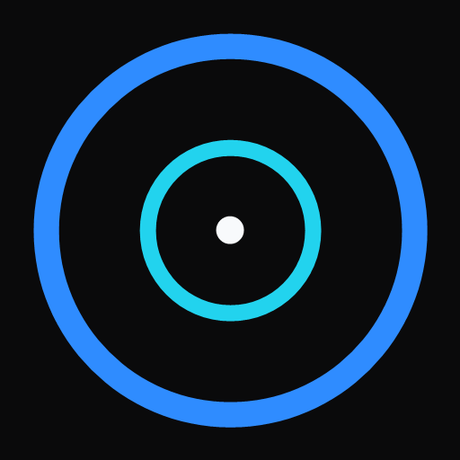
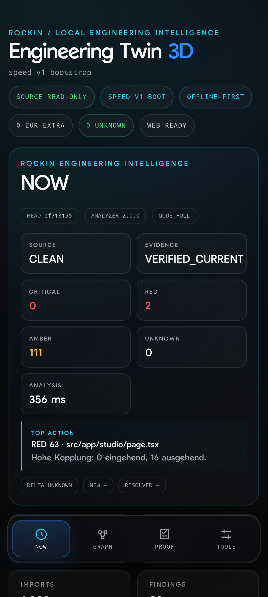
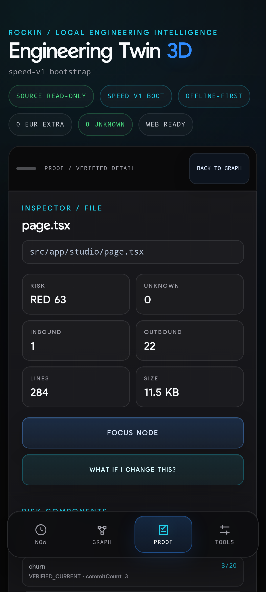
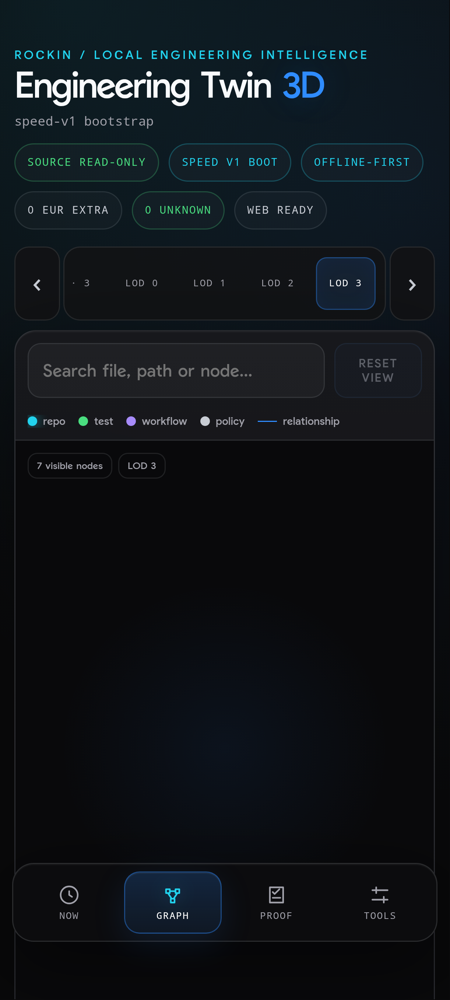
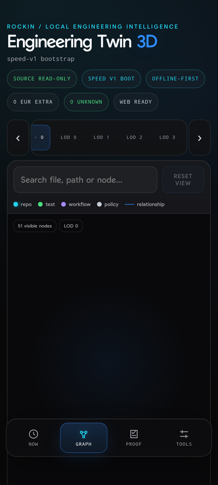

STRUCTURE
See repository architecture and high-signal components.

ENGINEERING TWINUnderstand structure, dependencies, tests, workflows, governance, risk and blast radius from one evidence-driven engineering surface.

Engineering Twin turns code, tests, workflows and policies into a connected model that can be searched, inspected and reasoned about before changes are made.
See repository architecture and high-signal components.
Trace imports and dependency relationships.
Understand what validates critical code paths.
Map CI/CD jobs, needs and execution paths.
Expose policies, protected areas and rules.
Prioritize components with elevated engineering risk.
Inspect the evidence behind every conclusion.
Model a possible blast radius before editing code.
Engineering Twin keeps conclusions tied to repository evidence and exact Git state. The goal is explainable engineering intelligence, not opaque scoring.


Engineering Twin is open to strategic acquisition, OEM / white-label and enterprise licensing discussions. The private implementation, release evidence and deal-specific diligence materials are maintained separately from this public repository.
Public evidence → NDA → private exact-SHA demo → architecture / OSS / limits diligence → deal-specific scope.
Read buyer overview
Engineering Twin combines visual navigation with deterministic repository intelligence so teams can investigate before they edit.
Reference pricing is retained for subscription and licensing discussions. Checkout and the planned Pro trial are not active in this public repository.
For individual developers.
For professional power users.
For small engineering teams.
For organizations and self-hosted deployments.
Annual reference pricing: Starter €190 · Pro €490 · Team €1,490.
The Engineering Twin product core is maintained separately from this public product repository. Sensitive technical material is shared only through an agreed private diligence process.
Developer Tools · DevSecOps · AI Coding · Code Intelligence · Technical Due Diligence
Contact RockIn AI on GitHub